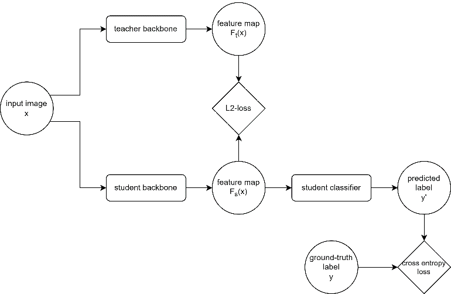
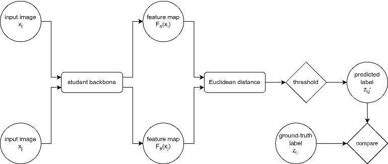

深度学习 · 人脸识别 · 集群训练
一个从未见过"变老"的教师模型，能教会学生模型应对年龄变化吗？
人的面容会随着几十年的时光而改变，而在同龄照片上训练的通用人脸识别模型，一旦被要求跨越 二十年去匹配同一个人，性能便会急剧下降。我们把一个强大的通用模型——在一千万张 MS1M 图像上 训练的 ElasticFace（ResNet-100）——蒸馏到在带年龄标注的 B3FD 数据集上训练的学生模型中， 训练在 Compute Canada 的 V100 上以 48 小时作业完成。蒸馏把 AgeDB 上 19 个百分点的提升传递 给了一个弱学生模型；而与无教师训练的专用模型相比，结果大致打平。两项发现都在本页呈现。
每一种配置，在每一个测试集上
人脸 verification accuracy，取自论文表 I–IV。每根柱上的竖线标记是最弱的独立模型——仅在 B3FD 上 训练的 ElasticFace——Δ 即相对于它的差值。
先看 AgeDB——它是年龄不变性的基准测试。在 MS1M 上训练的原版 ElasticFace 达到 98.3%， 无人能及。同一架构仅在 B3FD 上训练只有 57.0%。把 MS1M 模型蒸馏进去，它升到 76.5%；把 MTLFace 蒸馏进去，则达到 79.7%。而专为此任务设计的 MTLFace 本身，在没有任何教师的情况下 就能拿到 77.4%。
问题与数据集
人脸识别模型为每张图像生成一个特征向量；两张图像的向量足够接近，便判定为同一人。在 MS1M 上训练的模型——一千万张爬取的图像，涵盖十万人，且每人大多只有一个年龄段——学到的 特征极擅长区分不同的人，却难以认出二十年后的同一个人。而在失踪人口案件和边境管控中真正 重要的照片，往往正是那些旧照片。
四个数据集各司其职。MS1MV2 是教师模型知识的来源。B3FD ——375,592 张图像、53,759 人，从 IMDB-WIKI 和 CACD 中经生物特征筛选而来，并带有 0 到 100 岁的年龄标注——是所有学生模型的训练集。AgeDB（16,488 张图像，人工核验的 年龄标注）和 CASIA-WebFace（494,414 张图像）则完全留出，仅用于测试模型 对从未见过的人的泛化能力。
关于应用场景。年龄不变的人脸识别可用于寻找失踪儿童和核验身份证件， 也同样可用于未经同意的监控。论文在引言中已经说明了这一点，而我更愿意把它放在这里醒目 呈现，而不是埋没在文中：这是一项双刃的能力，构建它的同时也有义务把这一点说清楚。
OursKD：蒸馏方法
教师模型是 ResNet-100 backbone 上的 ElasticFace，由 Boutros 等人在 MS1MV2 上预训练——一个 261 MB 的 checkpoint，权重始终不更新。学生模型是另一个 ElasticFace，或者是 Huang 等人提出的 多任务年龄不变模型 MTLFace，均在 B3FD 上训练。每张图像同时经过教师和学生；损失函数把 学生拉向教师。

实际训练所用的损失函数
四项损失以相等权重相加。这是训练脚本中 AdaTransLearn_ElasticTriL2 配置所用的
原始判据：
def criterion(out, labels, ages):
s_features, t_features = out[0], out[1] # 学生 / 教师特征图
s_logits, t_logits = out[2], out[3]
l2_loss = mse(s_features, t_features) # 匹配教师的特征
kd_loss = kd(s_logits / T, softmax(t_logits / T, dim=1)) # 软目标，T = 40
ce_loss = ce(s_logits / T2, labels) # 仍要学习真实标签
tri_loss = triplet(s_features, labels, miner(s_features, labels)) # 拉近同一身份
return l2_loss + kd_loss + ce_loss + tri_lossL2 项是论文的核心思想——"教师对问题 x 的回答就是特征图，我们希望学生的回答与之 尽可能相似。"cross-entropy 项是一道防线，防止学生只是照搬一个特征未必适合本任务的教师。soft target 项 和 triplet 项则是标准的蒸馏与 metric learning 补充。
大规模训练
这些都无法在笔记本电脑上运行。每种配置都是 Compute Canada 上的一个 SLURM 作业：一块
V100、32 GB 内存、48 小时的墙钟时限，B3FD 在作业启动时解压到节点本地的 scratch 空间。
仓库中的 cc_*.sh 脚本把每个实验编码为可复现的作业——模型类、损失名称、
学习率 2e-4、批大小 64、温度 40——结果文档则把上方表格中的每一行都追溯到其中某个脚本。
"verification accuracy"衡量的是什么
在训练身份上的分类准确率，对识别陌生人几乎说明不了什么。因此模型是按图像对来 评分的：两张图像，一个真实标签——是否为同一人——判定则通过对二者特征图之间的欧氏距离设 阈值得到。阈值取使准确率最大的值，因为把它设为零毫无意义：同一个人 20 岁和 45 岁的照片 永远不会产生完全相同的特征。

为什么年龄差让这件事变难
这里是合成的距离分布，并非实测——形状仅作示意。拉大年龄差，观察"同一人"的分布如何滑入 "不同的人"的分布之中。
没有年龄差时，两条分布几乎不相触，最佳阈值几乎能把所有对判断正确。当年龄差达到数十年时， 没有哪个阈值是好的：向右移，陌生人会被接受；向左移，同一个人会被拒绝。这片重叠区域正是 年龄不变模型试图缩小的量——也正是 AgeDB 那一列所衡量的东西。
数字说明了什么
两件事，而且方向相反。
蒸馏传递了泛化能力。仅在 B3FD 上训练的 ElasticFace 在 AgeDB 上达到 57.0%，在 CASIA 上达到 68.0%。同一架构配上 MS1M 教师后分别达到 76.5% 和 82.1%——在从未 训练过的数据集上提升了 19.5 和 14.1 个百分点。而改用在 B3FD（而非 MS1M）上预训练的教师， 提升则小得多（64.7% / 71.8%），这就分离出了原因：被传递的是教师数据的多样性，而不是教师 的架构。论文的另一项观察也指向同一方向——当学生与教师在结构或预训练上差异越大时，提升 越大。
蒸馏并没有明显胜过专用模型。在 B3FD 上无教师训练的 MTLFace，在三个测试 集上分别取得 96.3% / 77.4% / 82.2%。最好的蒸馏学生——以 MTLFace 为教师的 ElasticFace—— 取得 94.3% / 79.7% / 82.9%：AgeDB 上领先 2.3 个百分点，CASIA 上领先 0.7，B3FD 测试划分上 落后 2.0。这些都是没有误差棒的单次训练结果，所以论文称之为"无显著提升"，这是正确的判断。 再考虑其代价——每一步都要额外通过一个 100 层的教师做一次前向传播——作为一种压缩策略， 蒸馏在这里并不划算。论文直言不讳："这是我们 KD 模型整体失败的一个标志。"
诊断，才是真正有用的部分。四项损失等权相加是一个猜测，而不是设计。 论文点明了这一点：L2、soft target、cross-entropy 和 triplet loss 的权重从未调过，而当 MTLFace 作为 学生时——它自带多任务损失——这些项之间可能在相互拉扯。基线 ElasticFace-on-B3FD 同样 从未调优，因此最大的那个"提升"部分来自于弱基线。两者都不神秘；都是预算所限。
论文
五页，IEEE 格式。 在新标签页中打开 ↗
全部原始材料
训练代码依赖一个 261 MB 的教师 checkpoint 以及各自带有许可协议的数据集，因此未在此打包提供。 论文第 III 节以及上方的损失函数忠实地反映了代码内容。
致谢与分工
三人课程项目
与两位团队成员共同完成，2024 年 1 月至 4 月。曹一明负责代码与评估，并为第一作者。
训练框架由课程提供，并由团队扩展：OursKD 模型类、上文所述的损失配置以及实验脚本均为 团队的工作；ElasticFace 与 MTLFace 的实现来自其原作者，ResNet backbone 来自 InsightFace。 本页的结果浏览器与阈值图由曹一明于项目结束后构建。
参考文献
- G. Hinton, O. Vinyals, J. Dean. Distilling the Knowledge in a Neural Network. 2015.
- Z. Huang, J. Zhang, H. Shan. When Age-Invariant Face Recognition Meets Face Age Synthesis: A Multi-Task Learning Framework. CVPR 2021 — MTLFace.
- F. Boutros et al. ElasticFace: Elastic Margin Loss for Deep Face Recognition. CVPRW 2022.
- Bešenić et al. B3FD: Biometrically Filtered Famous Figure Dataset. 2022; Moschoglou et al., AgeDB, CVPRW 2017; Yi et al., CASIA-WebFace, 2014; Guo et al., MS-Celeb-1M, ECCV 2016.